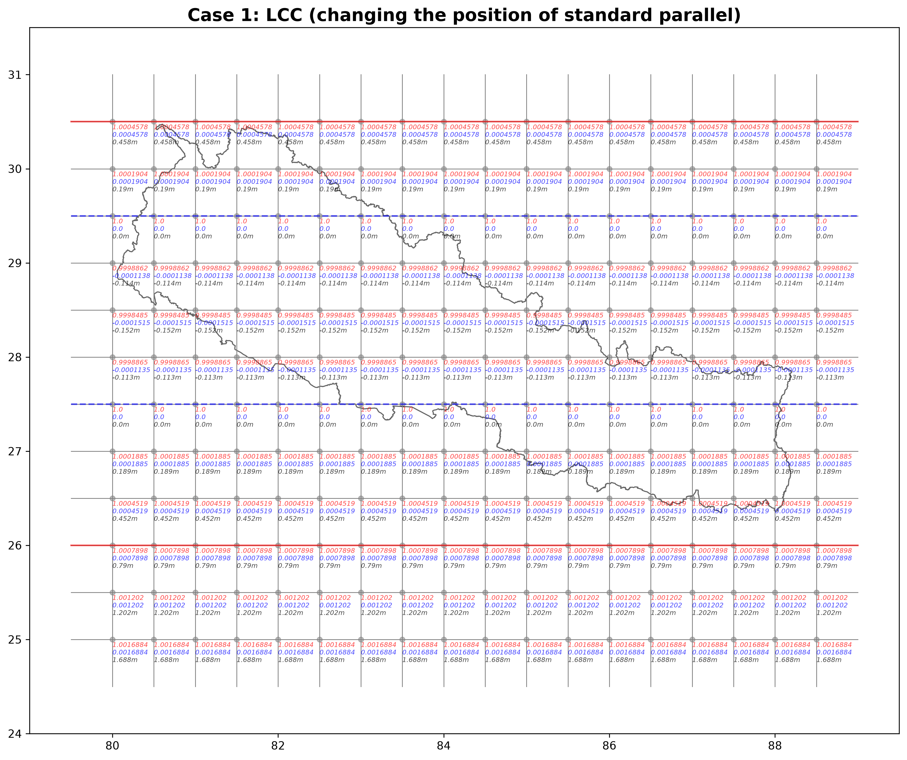

This article presents and explains distortion factor introduced by map projection and its pattern focused over territory of Nepal.
A map projection introduces distortion in an attempt to convert or transform curved earth surface (sphere or ellipsoid)
into flat paper (2D rectangular plane).
Two major projection system - Transverse Mercator (TM) and Lambert Conformal Conic (LCC) are presented here, specifically focused to distortion pattern caused by them.
TM is cylindrical, conformal, and secant. LCC is conical, conformal, and secant.
Recall your basics of TM and LCC. Recall your experiences and practices of using TM (in form of UTM or MUTM) and LCC while doing your surveying, mapping, GIS, and geomatics projects.
The article progresses from information on UTM to MUTM to LCC. Specifically focused on distortion factor.
The concept of blockwise distortion factor and arc-length (curved distance) are additional items at the end of page.

This figure visualizes customized UTM zone with central meridian (CM) at 84deg E longitude (In UTM system, there is no UTM zone
having CM at 84deg E longitude. That is why I said 'customized UTM zone'.
UTM Zone has six degree longitudinal width and the distortion factor is 0.9996 at central meridian.
In above figure, dottend red line is central meridian, solid red line is UTM zone border, and dotted blue is secant line.
In this plot, the latitudinal extent is 25deg N to 30.5deg N latitude, and longitudinal extent is 80deg E to 88.5deg E longitude, and each square grid in the plot has size of half degree by half degree).
The national admin boundary is plotted in background to provide perspective.
The values at each grid node is: blue text is distortion factor, red text is distortion error, and lightgray text is distortion amount per kilometer.
Note that the west part and east part of the Nepal territory extend beyond this customized UTM zone.

This figure is of modified UTM (MUTM zone). The 'modified' refers to change from 6 degree longitudinal width to 3 degree width, to
reduce the distortion. The distortion at central meridian is reduced to and constrained at 0.9999.
Inspect the distortion pattern, varies in laterally in longitudinal direction. Compare the earlier customized UTM zone and this MUTM
zone in terms of distortion factor. Obviously, less distortion in MUTM approach.
In this particular figure, the 3 degree zone with 84 deg E as the CM and distortion pattern is visualized.
Your 1 km distance at ground around central meridian region would be less by 10cm in your map.
Your 1 km distance at ground around border of the zone (1.5 degree away at either side) would be excess by around 18cm in your map.
Because of its minimal distortion and better than UTM, MUTM has been adopted /applied in large scale mapping (e.g. 1:500, 1:1250, 1:2500, 1:10000). Cadastral mapping need to be done at large scale, this is the reason why MUTM projection has been adopted.
The problem: because MUTM is just 3 degree width, it doesn't cover the entire east-west extent of Nepal. Thus, we introduced 3
different MUTM zones (continue to next/upcoming figure below).

Modified UTM. 3 such zone is required to cover entire Nepal. As Modified UTM provides minimal distortion
compared to UTM, why not use 3 separate MUTM zones for survyeing and mapping purpose in Nepal region.
3 MUTM zones put together, covers the extent of Nepal, lets call each MUTM81 (MUTM zone having 81 deg E longitude as central meridian), MUTM84, and MUTM87. MUTM81 covers western part, MUTM84 covers central part, and MUTM87 covers eastern part of Nepal.
Then you naturally ask /think: if my surveying and mapping area is Jhapa district, i would use MUTM87 projection, but what if
my project area lies at the boundary of these zones, e.g. at the boundaries of MUTM84 and MUTM87? For example, Sindhuli and Kavrepalanchok district falls at both MUTM84 and MUTM87 zone.
Also, you naturally ask/think: if my project area covers entire province (provincial level), which might extend /spreads to coverage of two neighboring MUTM zones, then?
The advantage: MUTM has less distortion. Suited to large scale mapping. Relatively smaller geographic coverage.
The disadvantage: one MUTM zone doesnt't cover area that extends beyond 3 degree width in longitude. That is why mutliple MUTM zones are introduced in a first place. The project area that lies at boundary of MUTM zones or the project area that span beyond the width of single MUTM zone e.g. entire province or entire Nepal, the diffculty arise in such scenario.
So, which projection system will I use when I am doing province-wide GIS analysis, nation-wide GIS analysis? lets say nationwide landuse product, nationwide vegetation coverage or forestry, nationwide topograpic features overlay with other thematic information?
These provice-wide / nation-wide examples, just mentioned here, are small scale mapping. The small scale (e.g. 1:25,000 or 1:100,000) absorbs the distortion error (the amount of distortion). Now the distortion cease to be key /critical factor at these kind of GIS analysis or scenario.
. In these cases, you again move from MUTM to UTM projection system (again UTM is just 6 degree width, UTM is limited also) or any other projection system that solves/sutis/fits your purpose/problem.
By now, we realized, we have been using UTM, MUTM and multiple MUTMs together for our surveying/mapping, GIS, and geomatics purposes and managing. Maybe we need third kind of projection / a next or newer class of projection system (continue to next/upcoming figure below for newer solution).

Conical projection. Lambert Conformal Conical (LCC) projection. The location of standard parallel
is according to Suresh Man Shrestha (SMS) designed /developed parameters. The location of SP
is key to distortion factor and pattern.
LCC is conformal, conical, and secant project.
This cone touches or intersects the earth (spheroid or ellipsoid) along two parallels (parallels of latitude). Such parallel is standard parallel. These intersecting parallel are also secant lines. There is no distortion introduced at standard parallels (the scale factor is unity here).
Double standard parallel (2sp LCC): this LCC which we are introduced here is called double standard parallel LCC. If a cone is maded to touch at only single paralle of latitude, then that is called single standard parallel (1sp LCC). We explore here 2sp LCC.
The location of standard parallel is the key decision, that further or later governs the distortion amount and distortion pattern.
Inspect the above figure. Border parallels (solid red line) are southern-most and northern-most bound. Standard parallels (dottend blue line). Notice lower sp is at 27deg N latitude and upper sp is at 29.75deg N latitude.
Now, we can inspect the distortion and distortion pattern. The blue text is the distortion value, red text is distortion error (scale error), and lightgray text is distortion introduced per km. One clear pattern: no distortion introduced at standard parallel, the distortion goes increasing if you move inwards from standard parallel, keep increasing, reaches maximum at certain latitude
One clear pattern: take lower standard parallel, there is no distortion at sp (scale factor of unity), if you move upwards (inwards), the distortion keeps increasing, reaches to maximum at some point (around mid of both sp), then the distortion keeps decreasing and reaches to no distortion (scale factor of unity) at upper sp.
Another pattern: take both sp and move inwards from both sp, you find distortion keeps increasing and reaches the maximum at certain point.
Take any one of the standard parallel and move outwards, you find distortion keeps increasing and later you will find dramatic increment in distortion compared to inward directions from both standard parallel.
These two standard parallels are put in optimal location resulting the minimal distortion we can achieve. But before concluding and settling for these two standard parallel positions, lets see few variations in LCC, different than this one (continue below for other variations /experiment of LCC).

For LCC system, the key parameter to distortion and its pattern is the location of SP. What if we change the
SP than earlier (Fig 4) settings. For convenience, because the LCC parameters (location of SP, origin of latitude and
longitude, false easting and northing) used in Fig 4, were proposed by Suresh Man Shrestha (SMS), lets call it SMS LCC. Whenever you see SMS LCC, this means Fig 4 parameters. Till now, we have only focused / discussed the SP and its location. We have not discussed other LCC parameters yet such as origin of latitude and longitude and false easting and northing.
Lets change SP to 27.5deg N and 29.5deg N latitude. Would we achieve minimal distortion? inspect Fig 5 above and compare with Fig 4.
We squeezed the inner space between SPs in this case compared to SMS LCC. The maximum distortion inside SPs is better /less than compared to SMS LCC. We achieved minimal distortion inside. However, notice the dramatic increase in distortion factor while moving outward from borth SPs. At 26deg N latitude, the distortion introduced is around 80cm in 1 km and at 30.5deg N latitude, the distortion introduced is around 45cm in 1 km.
In case of SMS LCC, the distortion introduced is 56cm and 40cm in 1km at 26deg N and 30.5deg N latitude.
Thus, you might have evaluated /analyzed that SMS LCC provides better distortion pattern than this one in overall, taking entire
extent of Nepal territory.
This case clearly shows that SMS LCC performs best/optimal than any other variations of LCC. You can change the location of SP anywhere you like and analyze the distortion pattern as an experiment. This is how you learn and absorb the ideas.

Have you arrived here by reading this article thoroughly. Wow, you have got the endurance.
Lets consider another scenario: What if we split in half the north-south extent of Nepal: upper part and lower part. As in multiple MUTM zones, lets try to apply multiple LCC. Lets develop separate LCC for both halves, namely Upper LCC and Lower LCC.
Fig 6 above shows the Upper LCC (Fig 7 below shows the Lower LCC). Now SPs are closer, results better scale factor. Compare it with
single LCC shown in Fig 4. Only limitation of Upper LCC is, it is upper only, do not cover lower half.

LCC. Lower LCC, lcc applied lower half of Nepal. It is exactly similar to upper LCC. Compare it with single LCC shown in Fig 4.

LCC. Both upper and lower LCC put together. There is overlapping (or gap?) region at dividing line,
a parallel that splits north-south extent of Nepal into two-half. In this analysis, the diviing line
is 28degN latitude parallel. Is it better to adopt double LCC compared to single LCC, what do you think?
Lets put both Upper and Lower LCC together. You get Fig 6.
The dividing line (dividing parallel) or common line (common parallel) that splits north-south extent into two-halves is 28deg N latitude. There is overlapping portion at this dividing line or is it gap? Lets call it double LCC system (note that 2SP LCC or double SP LCC is different than double LCC system: Upper & Lower LCC; Upper LCC is is 2SP and so is Lower LCC).

Having discussed UTM, MUTM and LCC, we knew and we saw that distortion factor varies at every point. The TM distortion factor
varies in lateral direction (longitudinal direction along the parellel) and varies in north-south direction
(latitudinal direction along the meridians or longitude line) for LCC.
Thus, it must have occured to your mind:
- If distortion varies at every point, what distortion factor (scale factor) will I apply for my traverese leg or GNSS baseline or (any length/distance)? (Ans: Line scale factor).
- If distortion varies, then what distortion factor (a single scale factor) will apply in survey /mapping area of my project?
Because distortion varies at every point, it would be wise and managable and makes our lives easy, if we apply single scale factor (either average or central or any approach that gives us single value) for reasonably larger block, within which that single value satisfy our problems. The concept of blockwise scale factor.
Fig 7 shows the blockwise scale factor for LCC.
The block is 0.5deg by 0.5deg. The mentioned scale factor is not actual scale
factor at centroid or central point of each block. But the line scale factor, that line pass through mid
longitude of each block. (equation: K = (k1+k2+4km)/6).
Lets inspect the blockwise scale factor in Fig 7. For blocks that are placed /alignted in lateral direction, the distortion factor /scale factor doesn't change, and that is the nature of LCC. For blocks in north-south direction, blockwise distortion factor changes, but it changes gradually which introduces negligible effect as a change of factor. Even if your project area covers blocks of extreme ends (the northernmost block and southernmost block), the difference in distortion factor is negligible enough.

Distortion is introduced invariably, if I want my curved length (arc length) computed over reference ellipsoid and then want equivalent distance in grid plane /paper map. Curved length on WGS84 surface to equivalent length on MUTM plane or LCC plane, this is what projection formula does at the cost of distortion. I want minimal distortion and the convenient. Which projection, MUTM or LCC, does solve my problem?